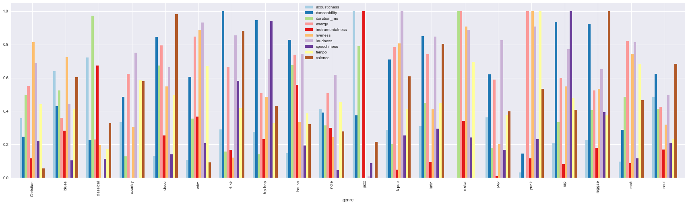
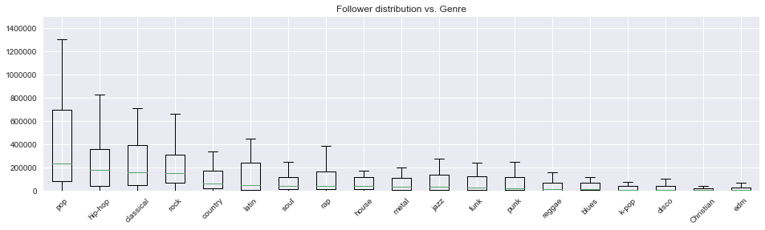
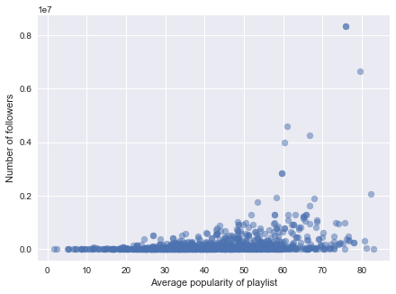
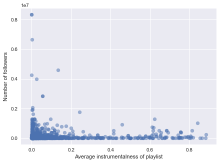
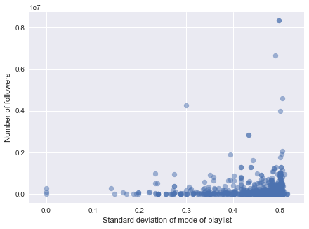
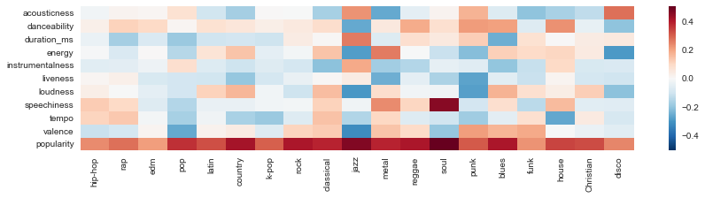
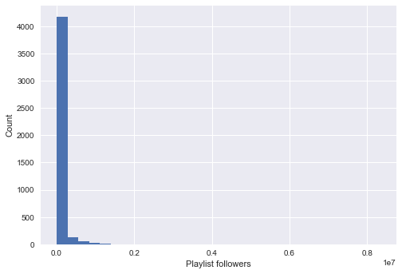
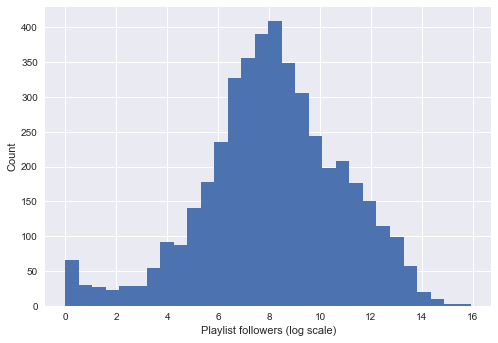

Spotify playlist followers prediction and algorithmic playlist generation
Group 66: Jiacheng Shi, Weihang Zhang, Yudi Wang and Ziqi Guo
The basic scope of the project is that given a Spotify playlist, to build a regression model to predict the success of the playlist measured by the potential number of followers. With this model, we can generate a high-quality playlist, given a specified genre and a pool of tracks to choose from.
To achieve the task of predicting followers, we can train a regression model on a set of labelled training data, with explanatory variables being a set of features derived from the playlist and its tracks, and response variable being the follower of the playlist. To generate a playlist, we will first take in inputs from the user, and then use our followers prediction model to identify the playlist that is predicted to have the most followers.
We chose 24 most popular genres from in Spotify, and collected information of top 50 playlist results with Spotify API. For each playlist, we collected the features of its basic information (e.g., number of followers), and also obtained a list of tracks (i.e., songs) within the playlist. Finally, we sent another query to collect audio features for each track.
With Spotify API, we collected and stored three data sets in JSON format, they are genres_playlists (genres and corresponding playlists), playlists_tracks (playlists and corresponding tracks) and tracks_features (tracks and corresponding features). We merged three dataset into a single data frame with the combination of
| Variable Name | Type | Description |
|---|---|---|
| acousticness | Quantitative, float | Sound through acoustic, as opposed to electric |
| danceability | Quantitative, float | Dance friendly measurement |
| duration_ms | Quantitative, float | Total length of music in second |
| energy | Quantitative, float | Identify the different pitches and frequencies, and create high- and low-pitch sound waves |
| instrumentalness | Quantitative, float | The variety of instruments appeared |
| key | Categorical, int | Scale of music, a set of sharp (♯), flat (♭) |
| liveness | Quantitative, float | Dynamically performed assertion of human presence within a technological network of communication |
| loudness | Quantitative, float | Sound pressure |
| mode | Categorical, int | Descending diatonic scales in the music of classical Greece |
| speechiness | Quantitative, float | measures the number of spoken words |
| tempo | Categorical, int | timing of music, or the speed |
| time_signature | Categorical, int | Beats (pulses) contained in each measure (bar) |
| valence | Quantitative, float | intrinsic attractiveness or aversiveness of an event, object, or situation |
| genre | Categorical, str | Genre of the track |
| popularity | Quantitative, int | Popularity measurement, range from 1 to 100 |
| followers | Quantitative, int | Number of followers |
There are several challenges we are faced with. First, the data is not ready-to-use. We need to collect our own data through Spotify Web API. It is up to us how we want to organize our data. Second, the data has relatively limited predictors considering the difficulty of the prediction task. These predictors are mostly at track-level, so we need to aggregate them effectively into a playlist-level in order to perform regression analysis. Another challenge lies in the playlist generation process. Searching for the playlist that is predicted to have the highest followers is an expensive combinatorial problem. We need to find alternatives to brute-force search.
We generated a barplot of the average values of different audio features for different genres. In order for the plot to be more informative, we normalized the range of each feature to be (0, 1). The main idea between this visualization is to show that different genres have different profiles of audio features, which determined their uniqueness.

Figure 1. Average values of audio features for different genres
For example, funk music has high danceability, jazz music has high instrumentalness, hip-hop has high speechiness, etc. This tells us these audio features can be very distinguishing. We also want to understand the distribution of the response variable - number of followers for each playlist. Thus, we plotted a set of boxplots of followers for each genre. In general, pop, hip-hop, classical and rock have relatively higher median and variance.
We also want to understand the distribution of the response variable - number of followers for each playlist. Thus, we plotted a set of boxplots of followers for each genre. In general, pop, hip-hop, classical and rock have relatively higher median and variance.

Figure 2. Distribution of number of followers for different genres
With an aim to identify useful predictors for building regression models, we plotted scatter plot of the number of followers with respect to different predictors. Here possible predictors include audio features of the tracks within the playlist, and the popularity of them (measured by how much it has been played on Spotify). However, as each song in a playlist can have a set of values, we will need some method of aggregation to construct playlist-level features. Here, we explored two ways, using mean to capture overall level, and using standard deviation to capture diversity within the playlist. In order to show clearer relationships, the graphs below might exclude some outliers that affect the visual.
When using mean as the aggregation method, we observe that some audio features, such as loudness and popularity (Fig 3), positively contribute to the number of followers. We also observed that instrumentalness is negatively correlated with number of followers. For tempo, it seems to have an interval that correlates more to high number of followers. This calls for feature engineering in subsequent steps, such as discretization of the tempo variable.
  Figure 3. Scatterplots of number of followers against predictors. (left: average popularity, middle: average instrumentalness, right: standard deviation of mode)
When using standard deviation, we can capture whether feature diversity in a playlist has relationship with the playlist follower numbers. So if we observe skewness in the plot, it means that either diversity of homogeneity is favorable to gaining higher followers. We observe that when a playlist has diversity in mode is positively correlated with the number of followers. This makes sense as mode directly determines the mode of the song. A relatively large diversity of tempo also seems to give rise to high followers, as the distribution is right-skewed.
As in the end we need to generate playlist for a specified genre, the model should be able to adapt to different genres. Therefore, we want to explore that for playlist in different genres, whether there is interaction between genres and the predictors’ correlation with the number of followers. Thus, we created a heatmap shown below. Each cell represents the correlation between predictors (represented by vertical axis) in a particular genre (represented by horizontal axis) and the number of followers of the playlist.

Figure 4. Heatmap of correlation of predictors with number of followers by genres
There is plenty of information in the heatmap. To name a few, popularity has positive correlation with followers across genres; speechiness is positively correlated with followers in soul music; valence is negatively correlated with followers in pop music; the correlation for different features is more bipolar in jazz, etc. This allows us to create interactions in the regression model to predict number of followers.
When we explore the distribution of the response variable, we found out that the distribution of playlist followers is heavily right-skewed. After transforming it to its logarithm scale, the distribution becomes much more normal. Therefore, in all our following modeling practices, we adopted the log scale of the original response variable.
 Figure 5. Histogram of playlist followers, before and after log transformation
As a first step, we want to have an initial model that uses the most basic features to benchmark against.
| Model | Linear Regression | |
|---|---|---|
| Preprocessing | None | |
| Feature | Mean audio features, mean popularity | |
| Training R Squared | 0.0670 | |
| Testing R Squared | 0.0491 | |
We went through multiple iterations of feature engineering, with an aim to extract more useful information from the collected data.
With each new addition, we recorded its corresponding effect in model performance. These models are still built with linear regression.
| # | New Feature | Training R Squared | Testing R Squared |
|---|---|---|---|
| 0 | - | 0.0670 | 0.0491 |
| 1 | One-hot encoding of categorical features | 0.4705 | 0.4494 |
| 2 | Top singers count | 0.4767 | 0.4588 |
| 3 | Maximum track popularity | 0.4788 | 0.4616 |
| 4 | Number of tracks, artists and albums | 0.5012 | 0.4953 |
| 5 | Standard deviations of audio features | 0.5107 | 0.5098 |
Figure 6. Evolution of R Squared during feature engineering
As a last step of feature engineering, we added in the interaction terms between genre and all other predictors. This is motivated by our EDA that for different genres, different predictors might have particularly high or low effect than they normally do. Although train test R Squared 0.68, test set R Squared dropped to below 0.3. This is a clear sign for overfitting. Thus, in the next section, we resort to PCA and feature selection to reduce the dimension of the data matrix.
From the attempts above, we realized that although we interaction terms might carry useful trends, adding all of them is subject to heavy overfitting. Hence, we want to explore two different options of dimensionality reduction: PCA and feature selection. After this, we will fit different models to the reduced data matrix, and compare their performance against each other, and also against the best performance before adding interaction terms.
We developed a 5-fold cross validation scheme to select the best n_component for the PCA transformation. We also plotted out the evolution of cross validation training and testing R2 to better visualize the trend of model accuracies. We can see that both R2 increase swiftly as the number of principal components increases from 1 to 21. Since then, R2 only slowly increase with high volatility.
Figure 7. Cross validation training and testing R Squared for different n_components
Now, as the data dimension has been sufficiently reduced, we built various regression models and compared their test set performance.
Figure 8. After PCA: test set R Squared comparison
Another way to shrink feature space is through forward feature selection. We used linear regression's BIC score as the criterion for choosing features. Below we printed the change in BIC with increasing amount of features in the model.
Figure 9. Evolution of BIC with increasing number of features
We also enumerated the top 10 features that are first selected into the model, many of which are highly interpretable.
| Sequence | Feature Name |
|---|---|
| 1 | genre_hollywoods x max_popularity |
| 2 | genre_k-pop x speechiness |
| 3 | genre_opera |
| 4 | genre_pop x popularity |
| 5 | genre_rock x popularity |
| 6 | genre_classical x popularity |
| 7 | genre_hip-hop x popularity |
| 8 | genre_house x popularity |
| 9 | genre_indie x num_artists |
| 10 | popularity_std |
For example, hollywood playlist depends highly on tracks' popularity; opera playlist might inherent receive lower number of followers; rap music has distinct interaction with average valence of tracks. As expected, we also see many genres have interaction with popularity, given that although popularity is contributive in general, it still has different extent of contribution depending on the genres.
At last, we also compared the test set performance across different regression models.
Figure 10. After forward feature selection: test set R Squared comparison
After using the approaches above discussed in class, we also implemented a feed forward neural network (FNN). Our FNN used two hidden layers, with linear function between each two layers. After attempting several activation functions of two hidden layers, we found that Tanh on the first hidden layer and sigmoid function on the second hidden layer provides the best performance on the test dataset. Although it did not achieve the best R2 score than the best ensemble models above after feature transformations, it performed much better than most models (e.g., Linear regressor, Elastic Net regression) given the same feature data before dimensionality reduction. Moreover, it fits relatively faster than the best ensemble models such as Random Forest regressor, and saves a huge amount of time of manual feature engineering.
Figure 11. Evolution of testing R Squared with epoch
We fitted the FNN on both the data before and after PCA. The two versions achieve almost identity final test set R Squared. This shows neural network's capability of control overfitting through its hidden layer and choice of activation function.
With a followers prediction model in place, what can we do with it? A direct application is to algorithmically generate a playlist out of many track candidates.
The problem comes in when the pool of candidates is too large, which is true for Spotify. Therefore, we will need some track-level filtering to help us narrow down the search space. From our modeling, we understand that popularity is a key influencer of playlist followers. Therefore, we can use tracks' individual popularity as a criterion to do initial filtering of tracks. We adopted a scaling factor of 3 in our analysis, which means for a desired playlist length d, we kept only the top 3d most popular tracks. After this step, we explored two approaches:
In general, our playlist generator has the signature of playlist_generator(library, model, genre, length). Library stands for all the track candidates; model gives the followers prediction model; genre and length specify the genre and length of the playlist to be generated.
Below, we compared the performance of these two approaches plus a baseline defined by random generation. The goal is to achieve high predicted followers for the generated playlist, and also with relatively small computation time. We can see that in our examples, greedy method is able to match the predicted followers of the exhaustive method, but with far smaller computational cost, usually within 2 to 3 seconds. Greedy approach's computational cost also grows linearly, as opposed to exhaustive search's exponential growth.
Figure 12. Comparison of predicted followers for different playlist generation approaches
Figure 13. Comparison of computation time for different playlist generation approaches
In this project, we had a chance to explore the entire process of data analysis: from data crawling, data cleaning, EDA, to building models, tuning models and model selections. Walking through this complete process as a group gave us a better insight in data science. We have met many obstacles throughout the process and we are very glad that we overcame all of them.
When first approaching this project, all we were considering was feature engineering and model designs, we were not too prepared with crawling the data. This actually was gave us many troubles. Subject to the access time limit of Spotify api, the data crawling turned out to be very time consuming. We untimately decided to automate every step of our crawling code and host it on an AWS server to finish the crawling job. The whole crawling script took 48 hours to finish its job and gave us ~350,000 tracks and ~4400 playlists in 24 different genres. The careful design of data crawling actually saved us a lot of time on data cleaning. After merging the dataframes we had, we ended up only dropping several row of data with 'nan' term introduced in the aggregation of our feature engineering step.
After that, we came to EDA as well as feature engineering. We find EDA to be extremely useful to the feature engineering. Most of our features are actually designed with the knowledge of our EDA. For example, we had a large heatmap showing the correlations of audio features and followers in different genres. We found many genres' correlations with number of followers are very sensitive to the changes in audio features. This gave us a very important motivation to design the interaction features between genres and audio features. Also, we found the total number of tracks in a playlist has a very high correlation with followers. This also turned out to be a very powerful feature as we reported previously in the notebook. We also made use of alternative data sources to contruct new features. Specifically, we scraped the Billboard top 100 singers to include top singers count as a predictor, which also helped the model to some extent. As we shown in the notebook, every new feature we introduced to the model resulted in an increase in the R Squared score.
To combat the overfitting caused by adding interaction terms, we adopted PCA and forward feature selection to reduce the dimensionality of our model. Then, we came down to fitting, selecting and tuning models. In this part we exaustively tried every model we have learnt in class, as well as some extra models we did not have exposure in the class yet. Specifically, we implemented a feed-forward Neural Network with 2 hidden layers in PyTorch, and employed Extra Trees and Extreme Gradient Boosting as extra models. We also collected the best-performing models we found and stacked them together to form a meta model, which usually gave us the best performance. In a nutshell, both PCA and feature selection, coupled with a carefully tuned model, were able to achieve a test set R Squared of over 0.57, a significant improvement on the model without interaction terms and dimensionality reduction. The advantage of feature selection over PCA is that, the selected features and the order they are selected give us extra information about their importance to the model.
In the end, the best model without interaction terms achieved a test set R Squared of 0.5098, and the best model with interaction terms achieved a test set R Squared of 0.5702. However, the sacrifice is more data processing steps (adding interaction terms, dimensionality reduction), and a more complicated model. In terms of model choices, tree based models generally perform better than other models. This might be due to tree based models' capability to capture non-linear relationships between predictors and response variables.
Lastly, we made use of our followers prediction model to build a playlist generator. We attempted three different approaches of narrowing down the search space, random, exhaustive and greedy. We compared their performance in terms of predicted followers and computational cost, and arrived at a conclusion that with a significant reduction in computation time, greedy search is able to generate playlists almost as high quality as that of exhaustive search. Thus, it might be the more viable approach among the three.